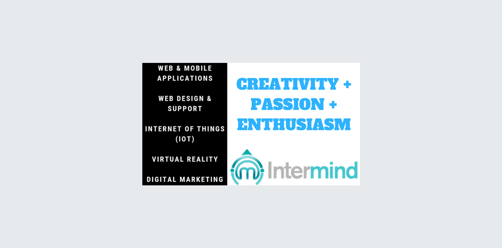

Blog //
Interview of Arya Patnaik Marketing Head & Co-Founder of Marketing Agency, Intermind Digital Solutions LLP
Interviewer : You are India's first 360° digital agency. How did you generate this idea ?
Arya Patnaik : We believe in the saying "Necessity is the mother of invention". Digital marketing, UI/UX & technology is becoming so intertwined that a digital agency today cannot claim to be experts in the field if they lack skills in any of the aforementioned areas.

If you are not able to employ Virtual Reality content in social media, Artificial Intelligence in programmatic ad buying or SEO in smart speakers, your offering has lost its relevance in the online space. We have built in-house expertise in emerging technologies like IoT and married it with digital marketing & usability to create unique capabilities.
Interviewer : You guys came a long way since you started. How did you manage to do that ?
Arya Patnaik : I started the digital marketing firm Webizus with two co-founders in 1999 & merged it with Kalptech Systems in 2017 to form Intermind. We experienced the dot com bust, 9/11 & economic downturns. These unfavorable market conditions defined what we stand for today. We are extremely cautious about digital spends by clients & ensure return on investment. Clients like Renuka Sugars & Tech Mahindra have partnered with us for over a decade because they know that we take ownership of what we do. Intermind consistently contributes to the bottomlines of our clients & they in turn ensure that we stay in business.

Interviewer : What are your future plans with the company ?
Arya Patnaik : Intermind has three co-founders, Kalpesh Singh who heads technology, Sunil Kohli who looks after UI/UX & me. I take care of digital marketing. It has been a little more than a year since all our teams are working together. We are still learning from each other on a daily basis. Take the case of Virtual Reality. While the tech team built a CMS for VR content (think of it as Wordpress for VR), the UI team brought in a new skill set called VUI & the digital marketing team ensured that the content is discoverable (by search engines) & shareable (in the formats required by various social platforms). Our work in Industry 4.0 & Smart Cities is being noticed by a couple of global IT giants and we will soon be partnering with one of them to implement our solutions for their clients.
Interviewer : what would you suggest to our young entrepreneurs in this field ?
Arya Patnaik : There is a lot of noise about funding and valuations. Young entrepreneurs need to rise above the clutter, develop a clear vision and deliver value. A study last year by the IBM Institute for Business Value and Oxford Economics found that 90% of Indian startups fail and the most common reason for failure is lack of innovation. The problem is that budding entrepreneurs read media reports of a handful of successful startups. Wannabe startups founders pick up a trending idea and start a company. Some of them get lucky with funding and exit at the right moment, but a majority of these firms will fail. We have seen this in the foodtech space before & we'll see failures in emerging technology startups in a couple of years. The mantra is to start with a vision and retrofit the technology.
Interviewer : How do you plan to brighten the future of the young engineers?
Arya Patnaik : In Mumbai, where we are headquartered, we are mentoring startups both at IIT Bombay & Sardar Patel Technology Business Incubation Center. Hopefully, our partnerships with premier engineering institutes is exposing tomorrow's innovators and entrepreneurs to practical application of emerging technologies and underlying challenges. It has been a symbiotic relationship in the past couple of years as these engineering students have been the greatest critique of our work and have helped us raise the bar in terms of our innovations.